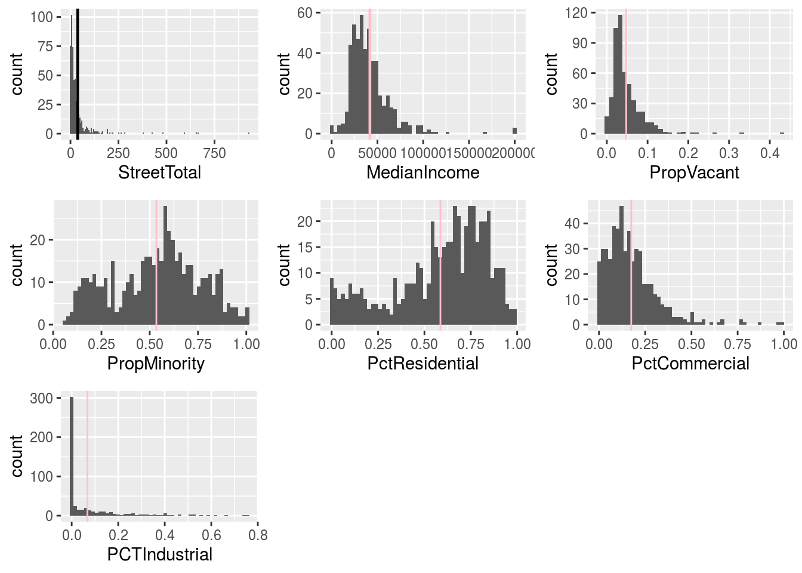

COVID-19 Open Research
Overview
Central to the debate of ethical algorithm design is a consideration of mis-classification costs for supervised learning methods. By building in asymmetric costs through sampling, machine learning engineers can take heed of policy makers’ desired cost-ratios. This random forest algorithm takes asymmetric sampling into account when predicting death rates of coronavirus patients in South Korea using the Kaggle COVID-19 Open Research Dataset.
Technical
Data cleaning: tidyverse Random Forest: R (randomforest)
## sample cleaning code
rm(list = ls())
Patient <- read.csv("PatientInfo.csv", na.strings = c("",NA))
save(Patient, file = "Patient.rdata")
Patient$ID <- as.numeric(as.character(Patient$patient_id))
class(Patient$sex)
Patient$sex
Patient$sex[is.na(Patient$sex)]<- "absent"
Patient$Age <- as.numeric(Patient$age)
data_new <- Patient %>%
mutate(sex = ifelse(is.na(Sex), "absent", Sex)) %>%
mutate(age = ifelse(is.na(age), "20s", age)) %>%
mutate(Age = case_when(age %in% c(1:10) ~ "10s",
age %in% c(11:20) ~ "20s",
age %in% c(21:30) ~ "30s",
age %in% c(31:40) ~ "40s",
age %in% c(41:50) ~ "50s",
age %in% c(51:60) ~ "60s",
age %in% c(61:70) ~ "70s",
age %in% c(71:80) ~ "80s",
age %in% c(81:120) ~ "90s")) %>%
mutate(Province = ifelse(is.na(province), "absent", province)) %>%
mutate(Source = ifelse(is.na(infection_case), "absent", infection_case)) %>%
mutate(Order = ifelse(is.na(infection_order), "4", infection_order)) %>%
mutate(confirmed_date = ifelse(is.na(confirmed_date), '2020-02-20', confirmed_date)) %>%
mutate(State3 = ifelse(is.na(state), 'deceased', state)) %>%
mutate(State2 = as.factor(ifelse(State3 == "deceased", "Died", "Lived"))) %>%
mutate(State2 = ifelse(is.na(State2), "Lived", State2)) %>%
mutate(birthyear = ifelse(is.na(birth_year), 1960, birth_year)) %>%
mutate(Age = ifelse(is.na(Age), "20s", Age))
## sample random forest code
rf <- randomForest(outcome~Sex + Age + Province + Source +
Order, data=coronavirus_data,
importance = TRUE,
sampsize = c(21,12,26))
print(rf)
###variable importance plots
par(mfrow = c(2,2))
varImpPlot(rf, class = 1, type = 1, scale = FALSE,
main = "Fig 1.1: Forecasting Importance Plot for Deceased")
varImpPlot(rf, type = 1, scale = FALSE,
main = "Fig 1.2: Forecasting Importance Plot Averaged for All")
varImpPlot(rf, class = 2, type = 1, scale = FALSE,
main = "Fig 1.3: Forecasting Importance Plot for Released")
varImpPlot(rf, class = 3, type = 1, scale = FALSE,
main = "Fig 1.4: Forecasting Importance Plot for Isolated")
####Partial plots
part1<- partialPlot(rf, pred.data = coronavirus_data, x.var = "Age",
rug = T, which.class = 1)
part2<- partialPlot(rf, pred.data = coronavirus_data, x.var = "Age",
rug = T, which.class = 2)
part3<- partialPlot(rf, pred.data = coronavirus_data, x.var = "Age",
rug = T, which.class = 3)
par(mfrow = c(2,2))
#tranform the logs back to probablity
scatter.smooth(part1$x, part1$y, xlab = "Age",
ylab = "Centered Log Odds of Death", main = "Fig 2.1: Partial Dependence Plot for Death on Age")
##how the other plots change based on outcome
scatter.smooth(part2$x, part2$y, xlab = "Age",
ylab = "Centered Log Odds of Released", main = "Fig 2.2: Partial Dependence Plot for Released on Age")
scatter.smooth(part3$x, part3$y, xlab = "Age",
ylab = "Centered Log Odds of Isolated", main = "Fig 2.3: Partial Dependence Plot for Isolated on Age")
par(mfrow = c(2,2))
part2 <- partialPlot(rf, pred.data = coronavirus_data,
x.var = Sex, reg = T, prob = T,which.class = 1 ,
main = "Fig 3.1: Partial Dependence Plot for Death on Sex",
xlab = "Sex", ylab = "Centered Log Odds of Death")
part2
part2 <- partialPlot(rf, pred.data = coronavirus_data,
x.var = Order, reg = T, prob = T,which.class = 1 ,
main = "Fig 3.2: Partial Dependence Plot for Death on Order",
xlab = "Order", ylab = "Centered Log Odds of Death")
part2
part2 <- partialPlot(rf, pred.data = coronavirus_data,
x.var = Province, reg = T, prob = T,which.class = 1 ,
main = "Fig 3.3: Partial Dependence Plot for Death on Province",
xlab = "Province", ylab = "Centered Log Odds of Death")
part2
part2 <- partialPlot(rf, pred.data = coronavirus_data,
x.var = Source, reg = T, prob = T,which.class = 1 ,
main = "Fig 3.4: Partial Dependence Plot for Death on Source",
xlab = "Source", ylab = "Centered Log Odds of Death")
part2
table(coronavirus_data$Source, coronavirus_data$State3)
par(mfrow = c(2,2))
m1<- randomForest::margin(rf)
m1
hist(m1, breaks = 30, main = "Fig 4.1: Histogram of Votes over Trees", xlab = "Margin")
m2 <- subset(m1, names(m1) == 1)
m2
hist(m2, breaks = 30, main = "Fig 4.2: Margin for Death classification", xlab = "Votes for Deceased")
m2
m3 <- subset(m1, names(m1) == 2)
hist(m3,breaks = 30, main = "Fig 4.3: Margin for Released classification", xlab = "Votes for Released")
m3 <- subset(m1, names(m1) == 3)
hist(m3, breaks = 30, main = "Fig 4.4: Margin for Isolated classification", xlab = "Votes for Isolated")| Confusion Table | Outcome1 | Outcome2 | Outcome3 | Classification Error |
|---|---|---|---|---|
| Deceased | 26 | 1 | 5 | 0.16 |
| Released | 10 | 149 | 115 | 0.46 |
| Isolated | 105 | 130 | 1578 | 0.13 |
Los Angeles Census Tracts
Overview
A hard to swallow assumption in the linear model framework is that a particular feature will change at the same rate across all values for a given variable. General Additive Models (GAM) give analysts the opportunity to identify nonlinear changes between covariates and the dependent variable. These nonparametric models can suffer from poor interpretability, however, and strong assumptions will have to be made regarding the data generation process. In a project using census data in the city of Los Angeles, GAM models identify outlier trends in homeless individuals, yet they also reveal limitations of the loess smoother at upper boundaries of data.
Technical
Data cleaning: tidyverse General Additive Models: mgc, mgcViz and gam

library(tidyverse)
library(DataExplorer)
library(gridExtra)
#inspect data
load("data/NewHomeless.rdata")
homeless <- homeless
#count the missing data values
# sapply(homeless, function(x) sum(is.na(x)))
# #inspect missing values
# missing <- homeless %>%
# filter(is.na(PropVacant))
#impute the missing data
homeless[is.na(homeless)] = 0
#cleanign up the mis coded
# Adjust values of PropMinority mis-coded as "100" instead of "1.0"
library(dplyr)
homeless <- mutate_at(homeless, vars(PropMinority), list(~ ifelse( . > 1.0, 1.0, .)))
# Convert values of "Pct" variables to be in decimal scale
homeless <- mutate_at(homeless, vars(PctResidential:PCTIndustrial), list(~ .*.01))
# Recode four NAs in PropVacant as zero owing to how few residential dwellings exist in
# those tracts
homeless <- mutate_at(homeless, vars(PropVacant), list(~ ifelse(is.na(.)==T, 0, .)))
#recode the industrial
homeless <- homeless %>%
mutate(Industrial = ifelse(PCTIndustrial >0, 1, 0))
####################
#Step 2: Univariate Statistics
library(DataExplorer)
#pairs
# pairs(homeless)
# #correlation
# plot_correlation(homeless, type = 'continuous','Review.Date')
#Street Total
par(mfrow = c(1,2))
p1 <- ggplot(aes(StreetTotal), data = homeless) +
geom_histogram(binwidth = 6) +
geom_vline(xintercept = mean(homeless$StreetTotal), size = 0.8)
p2 <- ggplot(aes(MedianIncome), data = homeless) +
geom_histogram(bins = 50) +
geom_vline(xintercept = mean(homeless$MedianIncome), colour = "pink", size = 0.8)
#Prop Vacant
p3 <- homeless %>%
ggplot(aes(PropVacant)) +
geom_histogram(bins = 40) +
geom_vline(xintercept = mean(homeless$PropVacant), colour = "pink")
#Prop Minority
p4 <- homeless %>%
ggplot(aes(PropMinority)) +
geom_histogram(bins = 50) +
geom_vline(xintercept = mean(homeless$PropMinority), colour = "pink")
#Pct Residential
p5 <- homeless %>%
ggplot(aes(PctResidential)) +
geom_histogram(bins = 50) +
geom_vline(xintercept = mean(homeless$PctResidential), colour = "pink")
#PctCommercial
p6 <- homeless %>%
ggplot(aes(PctCommercial)) +
geom_histogram(bins = 50) +
geom_vline(xintercept = mean(homeless$PctCommercial), colour = "pink")
#PctIndustrial
p7 <- homeless %>%
ggplot(aes(PCTIndustrial)) +
geom_histogram(bins = 50) +
geom_vline(xintercept = mean(homeless$PCTIndustrial), colour = "pink")
library(gridExtra)
# grid.arrange(p1, p2, p3, p4, p5, p6, p7, nrow = 3)
#set seed at 4000
# Bring in data and create initial training and test datasets
set.seed(4000)
df <- homeless
index <- sample(1:nrow(df), (nrow(df))/2, replace = F)
Train <- na.omit(df[index,]) # Training data
Test <- na.omit(df[-index,]) # Test data
##coming to the right model:
library(leaps)
All1 <- regsubsets(StreetTotal ~ MedianIncome + PropMinority +
PropVacant+
PctResidential+
PCTIndustrial +
PctCommercial +
Industrial, data = Train)
# All1
# summary(All1)
Model2 <- lm(StreetTotal ~
PropVacant+
Industrial +
(PropVacant:Industrial), data = Train)
# summary(Model2)
## Generalization error ##
# Specify a model on the testing data
Model2 <- lm(StreetTotal ~
PropVacant+
Industrial +
(PropVacant:Industrial), data = Test)
# summary(Model2)
#estimate the fitted values on the testing data, and the generalization error
preds <- predict(Model2, newdata = Test) # New fitted values derived from the test data
GE <- var(Test$StreetTotal - preds) # Estimate of generalization error (the variance of the residuals when
# GE
# sqrt(GE)
# Bootstrap a confidence interval for the generalization error
bootstrap_genError <-
function(x) {
bootstrapped_genErrors <- 0
for (i in 1:1000) {
index <- sample(1:nrow(x), nrow(x), replace = T)
sample_Test <- x[index,]
sample_Test_preds <- predict(Model2, newdata = sample_Test)
bootstrapped_genErrors[i] <- var(sample_Test$StreetTotal - sample_Test_preds)
}
return(bootstrapped_genErrors)
}
bootstrap_results_ge <- bootstrap_genError(Test)
# Check generalization error bootstrap results
# mean(bootstrap_results_ge, na.rm = T)
# summary(bootstrap_results_ge)
# hist(bootstrap_results_ge, breaks = 20)
# qqnorm(bootstrap_results_ge)
# sd(bootstrap_results_ge)
# quantile(bootstrap_results_ge, probs = c(.025,.975))
# plot(density(bootstrap_results_ge))
# qqnorm(bootstrap_results_ge)
#use robust sandwich standard errors in the sandwich package
# install.packages("sandwich")
library(sandwich)
# vcovHC(Model2, type = "HC")
# sandwich_se <- diag(vcovHC(Model2, type = "HC1"))
# sqrt(sandwich_se)
#then can get the confidence interval limits of these
# coef(Model2) - 1.96*sandwich_se
# coef(Model2) + 1.96*sandwich_se
library(gam)
library(mgcv)
library(leaps)
homeless2 <- homeless %>%
filter(MedianIncome > 60000 & PropVacant < .10)
##MODEL 1
out3 <- gam(StreetTotal ~
s(PCTIndustrial) +
s(PctCommercial) +
s(PropVacant) +
s(MedianIncome), data = homeless, family = gaussian)
# summary(out3)
par(mfrow=c(2,2))
# plot(out3, residual = T, cex = 1, pch = 19, shade = T, shade.col = "light blue",
# col = "#FAD7A0")
library(mgcViz)
b<- getViz(out3)
o <- plot( sm(b, 1) )
o + l_fitLine(colour = "#FAD7A0") + l_rug(mapping = aes(x=x, y=y), alpha = 0.9) +
l_ciLine(mul = 5, colour = "light blue", linetype = 2) +
l_points(shape = 19, size = 1, alpha = 0.7, color = "light blue") + theme_classic()
Philadelphia Public Schools
Overview
In experiments where randomization is not feasible, propensity score matching helps to control for confounded relationships. Analysts working in this causal framework often run into a particular issue: sample size affects their ability to arrive at evenly matched samples. This problem is especially prevalent in observational studies which use administrative data. In a project with the Philadelphia School District, we arrive at better percent balance improvement by trimming mis-represented groups.
Technical
Data cleaning: tidyverse Causal Inference: R (MatchIt)

Spotify Web API
Overview
Data from the Spotify API are fodder for a few data journalism projects currently in the works. One project involves visualizing changing applause levels among an artist’s studio and live recordings. With this jitter plot, built using the JavaScript library D3.js, a user can evaluate distances between points and visualize the “ceiling effect” of comparison data.
Technical
Web scraping: Python (BeautifulSoup) Data Cleaning: tidyverse Data visualization: D3.js

Sample
Sample visualization. Full project in process.
# d3.csv("data/small_website.csv"), (function(data){
# console.log(data);
# });
#
#
#
# var w = 400;
# var h = 400;
# var barPadding = 1;
# var padding = 20;
#
# var svg = d3.select("#chart-area-updates2").append("svg")
# .attr("width", w)
# .attr("height", h);
# var jitterWidth = 100;
#
# var allGroup = d3.map(data, function(d){
# return(d.artist_name)}).keys();
#
# var yScale = d3.scaleLinear()
# .domain([0, 1])
# .range([300,1]);
#
# var yAxis = d3.axisLeft()
# .scale(yScale)
# .ticks(5);
#
#
# d3.select("#selectButton")
# .selectAll('myOptions')
# .data(allGroup)
# .enter()
# .append('option')
# .text(function(d) { return d; })
# .attr("value", function(d) {return d;});
#
#
#
# svg.selectAll("circle")
# .data(data)
# .enter()
# .append("circle")
# .style("opacity", '0.7')
# .attr("cx", function(d){
# return(150 - Math.random() *jitterWidth)})
# .attr("cy", function(d) {
# return yScale(d.mean_liveness);
# })
# .attr("r", function(d) {
# return d.mean_liveness*10;
# })
# .attr("fill", function(d){
# if(d.live_marker2 == "live"){
# return "#CCE5FF";
# } else{
# return "#000099";
# }
# });
#
#
#
#
#
# d3.select("#selectButton")
# .on("change", function(){
#
# var selectedOption = d3.select(this).property("value");
#
# svg.selectAll("circle")
# .data(data)
# .transition()
# .duration(800)
# .filter(function(d){
# return d.artist_name == selectedOption;
# })
# .attr("cx", 250)
# .attr("cy", function(d) {
# return d.mean_liveness * 450;
# })
# .attr("r", function(d) {
# return d.mean_liveness*20;
# })
# .attr("fill", function(d){
# if(d.live_marker2 == "live"){
# return "#CCE5FF";
# } else{
# return "#000099";
# }
# });
# });
#
# d3.select("#clickingtag")
# .on("click", function(){
#
# svg.selectAll("circle")
# .data(data)
# .filter(function(d){
# return d.artist_name == "Nirvana";
# })
# .attr("cx", 150)
# .attr("cy", function(d) {
# return d.mean_liveness * 450;
# })
# .attr("r", function(d) {
# return d.mean_liveness*7;
# })
# .attr("fill", function(d){
# if(d.live_marker2 == "live"){
# return "blue";
# } else{
# return "black";
# }
# });
# });
#
#
# svg.append("g")
# .attr("class", "axis")
# .attr("transform", "translate(" + padding + ",0)")
# .call(yAxis);
#
# ```
#
#
# <h3 id = "updates and motions2"> Studio and Live Applause </h3>
#
# <body id = "updates and motions">
#
# <div class = "container updates">
# <div class = "row updates">
# <div id = "chart-area-updates2"></div>
# </div>
# <select id="selectButton"></select>
# </div>
# <p id = "clickingtag"> Choose an artist </p>
# <svg id = "1"></svg>
# </div>
#
#
# ```{r setupupdate00}
# knitr::opts_chunk$set(
# echo = TRUE,
# message = FALSE,
# warning = FALSE
# )
# d3.csv("data/small_website.csv"), (function(data){
# console.log(data);
# });
#
#
#
# var w = 400;
# var h = 400;
# var barPadding = 1;
# var padding = 20;
#
# var svg = d3.select("#chart-area-updates2").append("svg")
# .attr("width", w)
# .attr("height", h);
# var jitterWidth = 100;
#
# var allGroup = d3.map(data, function(d){
# return(d.artist_name)}).keys();
#
# var yScale = d3.scaleLinear()
# .domain([0, 1])
# .range([300,1]);
#
# var yAxis = d3.axisLeft()
# .scale(yScale)
# .ticks(5);
#
#
# d3.select("#selectButton")
# .selectAll('myOptions')
# .data(allGroup)
# .enter()
# .append('option')
# .text(function(d) { return d; })
# .attr("value", function(d) {return d;});
#
#
#
# svg.selectAll("circle")
# .data(data)
# .enter()
# .append("circle")
# .style("opacity", '0.7')
# .attr("cx", function(d){
# return(150 - Math.random() *jitterWidth)})
# .attr("cy", function(d) {
# return yScale(d.mean_liveness);
# })
# .attr("r", function(d) {
# return d.mean_liveness*10;
# })
# .attr("fill", function(d){
# if(d.live_marker2 == "live"){
# return "#CCE5FF";
# } else{
# return "#000099";
# }
# });
#
#
#
#
#
# d3.select("#selectButton")
# .on("change", function(){
#
# var selectedOption = d3.select(this).property("value");
#
# svg.selectAll("circle")
# .data(data)
# .transition()
# .duration(800)
# .filter(function(d){
# return d.artist_name == selectedOption;
# })
# .attr("cx", 250)
# .attr("cy", function(d) {
# return d.mean_liveness * 450;
# })
# .attr("r", function(d) {
# return d.mean_liveness*20;
# })
# .attr("fill", function(d){
# if(d.live_marker2 == "live"){
# return "#CCE5FF";
# } else{
# return "#000099";
# }
# });
# });
#
# d3.select("#clickingtag")
# .on("click", function(){
#
# svg.selectAll("circle")
# .data(data)
# .filter(function(d){
# return d.artist_name == "Nirvana";
# })
# .attr("cx", 150)
# .attr("cy", function(d) {
# return d.mean_liveness * 450;
# })
# .attr("r", function(d) {
# return d.mean_liveness*7;
# })
# .attr("fill", function(d){
# if(d.live_marker2 == "live"){
# return "blue";
# } else{
# return "black";
# }
# });
# });
#
#
# svg.append("g")
# .attr("class", "axis")
# .attr("transform", "translate(" + padding + ",0)")
# .call(yAxis);